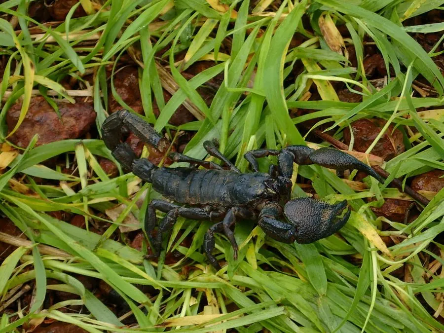

蛛形动物 · 动物界
帝王蝎 Pandinus imperator

世界上体型最大的蝎子之一，体长可达 20 厘米，双螯粗壮、毒性较弱，在紫外灯下会发出蓝绿色荧光。
- 分类
- 门节肢动物门纲蛛形纲目蝎目科蝎科属帝王蝎属
- 栖息环境
- 非洲西部与中部的热带雨林、稀树草原的落叶层与土洞
- 地理分布
- 非洲西部和中部的多个国家
- 保护级别
- IUCN 暂无评估；CITES 附录 II；非中国原产
物种志
帝王蝎体长可达 15–20 厘米，是世界上体型最大的蝎子之一，体重可达 30 克。它身体呈黑褐色或深紫色，双螯（钳）特别粗壮、表面有颗粒状突起，尾节较粗但毒针相对较小；外骨骼坚硬，在紫外灯照射下会发出蓝绿色荧光。
它分布于非洲西部和中部的热带雨林与稀树草原，栖息于落叶层、倒木下和土洞中，夜间捕食昆虫、蜘蛛、蚯蚓和小型脊椎动物。它是卵胎生蝎类，交配后妊娠约 6–9 个月，每胎产 20–40 只幼蝎，幼蝎出生后爬上母背生活数日。帝王蝎毒性较弱，被螫通常只出现局部疼痛和红肿，但过敏体质者仍需就医；它因体型大、性情温和而成为热门宠物，野外捕捉和栖息地破坏使其种群受到影响，国际贸易受国际公约监管。
形态与习性
- 食性昆虫、蜘蛛、蚯蚓和小型脊椎动物
- 体长可达 15–20 cm
- 体重约 20–35 g
- 寿命约 15–20 年
- 繁殖卵胎生，妊娠 6–9 个月，每胎 20–40 只
- 活动节律夜行性，白天藏在落叶层和土洞中
- 毒性毒性较弱，被螫通常仅局部疼痛红肿，过敏者需就医
趣味知识
- 帝王蝎是世界上体型最大的蝎子之一，体长可达 20 厘米。
- 它的外骨骼在紫外灯照射下会发出蓝绿色荧光，夜间较容易发现。
- 帝王蝎虽然体型大，但毒性较弱，被螫通常只引起局部疼痛。